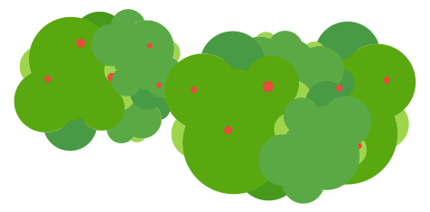
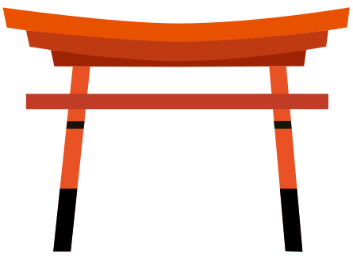
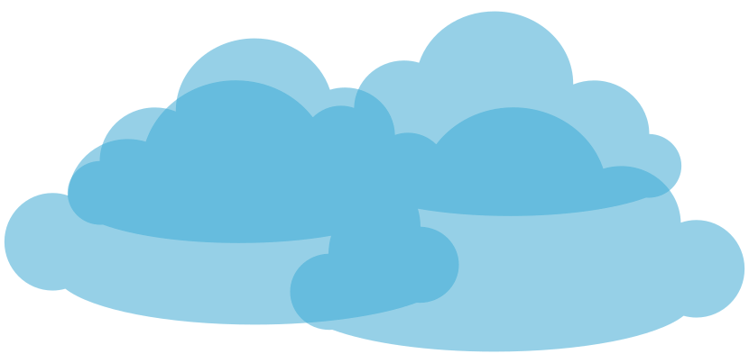
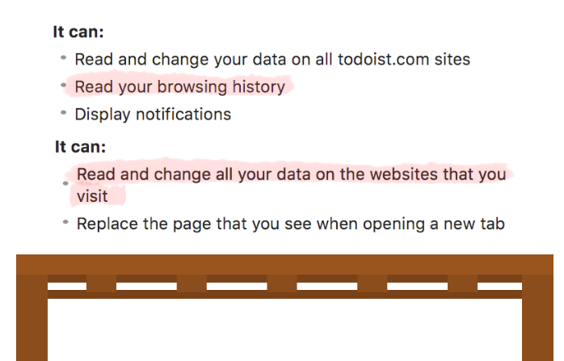
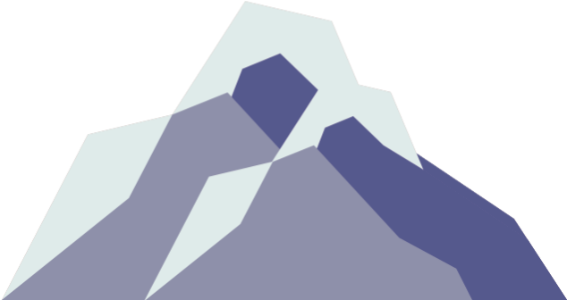
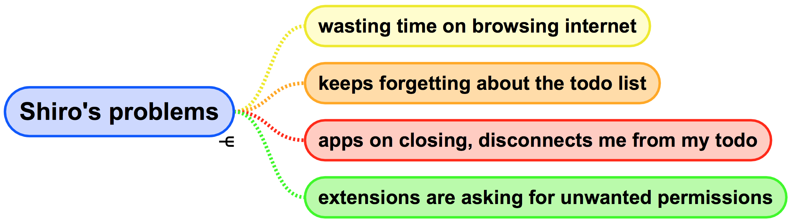
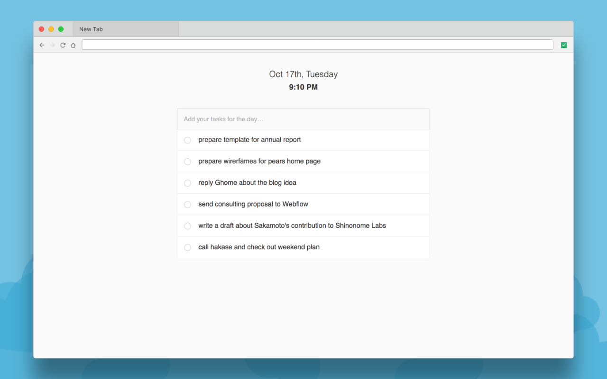
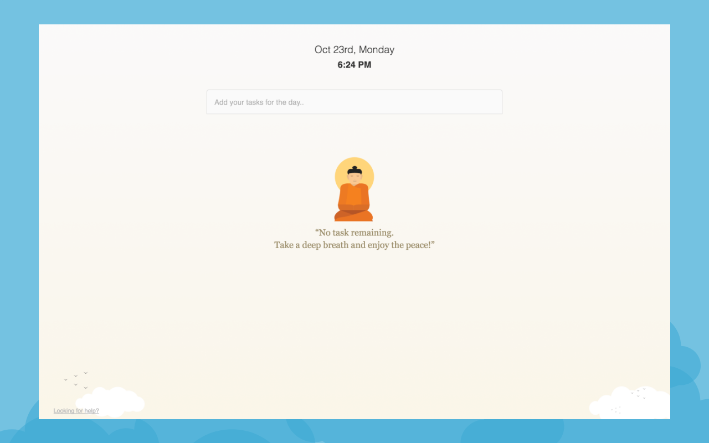
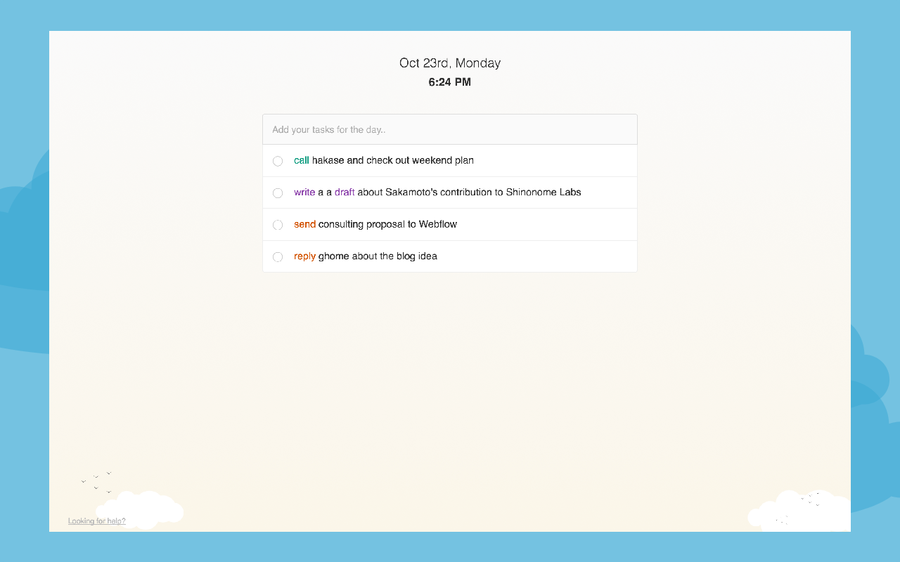

Building Todo Tab
11 Oct 2017
Today I am going to talk about a Chrome Extension called Todo Tab. There are many Todo applications in the market. And some of them comes with assistive support and intelligence. So, why another todo application? Before I answer this question, please allow me to introduce my friend Shiro.
Shiro's Problem



Shiro is a designer and a heavy laptop user. He spends most of his day on the browser, writer and design tools. On top of that, he is a procrastinator and wastes a reasonable amount of time browsing the internet.
At one point he realised, he should focus on his work. Otherwise, it will affect his productivity. And as a remedy, he started using a to-do app. But, he was not happy with the app. Because, once he closes the app, the list also start fading from his short-term memory and he will be back in the same habit of browsing.
To overcome the mental block, the best way is to distract the browsing flow and make him realise that he has work to do. For distracting the browsing flow, one option is to show notifications. But he doesn't like push notifications. So, the other option will be overriding the browser's new tab with a todo list. Because, whenever he opens a tab he will see the list, and will realise that he has some tasks to do.


But when Shiro tried installing extensions, most of them asked for unnecessary permissions. And being sceptic about the privacy, he didn't install any of them. Instead, he asked me to build a simple todo extension, where he can add and check tasks, that's it!

Building a Todo
Nowadays it's effortless to create a to-do app; you can clone a free repo from Github and add modifications to it. It took me around an hour to compile a solution for Shiro.

An Intriguing Problem
Using the extension for a week, Shiro came back and shared an interesting problem. i.e. he lacks an overview for his todo. On adding more than six task to the list, it turns out to be hard for him to recognise each of them. So every time he need read the description to understand what it is.
The problem is because of one good thing that he does with the todo list. When he write tasks, he writes appropriately with action and subject. This makes the task description long, as well as hard to traverse.
Re-engineering the Todo
-
prepare wireframes for PeARS home page
-
write a draft about Sakamoto's contribution to Shinonome Labs
-
prepare template for annual report
-
send consulting proposal to Webflow
-
reply Ghome about the blog idea
Right now, it's a flat list of sentences. To improve the recognition of the list one way is to introduce some visual identifiers like tags.
-
prepare wireframes for #PeARS home page
-
write a draft about Sakamoto's contribution to Shinonome Labs #article
-
prepare template for annual report #work
-
send consulting proposal to Webflow #work
-
reply Ghome about the blog idea #personal
But the problem with tagging is it adds an extra cognitive load to the user. And it's better to make the user focus on writing the description instead thinking about tags. So the tool should take care of parsing the description and deducing an identifier from that.
If we parse a task description, it contains nouns and verbs. And for a todo, verbs are the most important because it defines the action. On highlighting these verbs, the action gets more prominence. This prominence act as a hook to recall the subject.
-
prepare wireframes for PeARS home page
-
write a draft about Sakamoto's contribution to Shinonome Labs
-
prepare template for annual report
-
send consulting proposal to Webflow
-
reply Ghome about the blog idea
By highlighting the verbs, the readability of the todo list also increased. And the user can now pinpoint task much faster. Also, to get the overview of the todo in one shot.
Currently, the highlighting is mono coloured. And if we change to multicolour, the verbs will become more distinguishable. And it will be easy for the user to remember the action along with the colour. Also, reduce the time taken to identify a task.
-
prepare wireframes for PeARS home page
-
write a draft about Sakamoto's contribution to Shinonome Labs
-
prepare template for annual report
-
send consulting proposal to Webflow
-
reply Ghome about the blog idea
But all these findings are hypothetical and need get validated.
Building MVP
For testing the concept, it's better to release an MVP to people and let them use. And based on their feedback, we can check the performance of new enhancement.
For an MVP, it's better to keep it simple and focus on the feature that we want to test. So instead of doing language processing, I made a standard list of popular verbs like reply, meeting and call. Based on this list, the tool will parse the description and highlight the verb. It didn't take much time to add the code and wrap the extension in a smooth theme.


Distribution
To distribute the extension, I choose Product Hunt and my all time favourite UX Mastery Community. Along with the channels, I shared it across a couple of subreddits and Designer News.Returns
- Todo Tab got featured in Product Hunt's daily popular app listing.
- More than 600 users in the first day itself.
- Retained more than 80% of users (Aug 2017 - Oct 2017)
- And Shiro's is also happy
 Get Extension
Get Extension
The extension is currently available only for Chrome. But no worries, all other platforms including mobile are on the roadmap.
Thank you for reading the story about Todo Tab. If you have any questions, feel free to mail me.
Have a Nice Day!